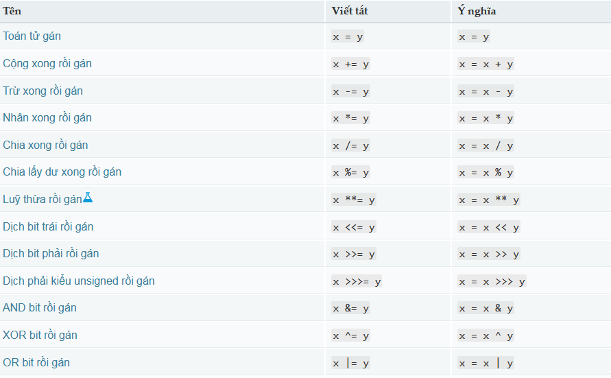

JAVASCRIPT CƠ BẢN
Tạo một hiệu ứng với JavaScript
JavaScript là một ngôn ngữ gia thêm khả năng tương tác cho website của bạn (ví dụ: trò chơi, các phản hồi khi các nút được nhấn hoặc nhập dữ liệu trên form, kiểu động, hoạt họa). Bài viết này sẽ giúp bạn khởi động với ngôn ngữ thú vị này và cho bạn ý tưởng về những gì có thể xảy ra.
JavaScript thật sự là gì?
JavaScript (viết tắt là "js") là một ngôn ngữ lập trình mang đầy đủ tính năng của một ngôn ngữ lập trình động mà khi nó được áp dụng vào một tài liệu HTML, nó có thể đem lại khả năng tương tác động trên các trang web.
JavaScript thật sự rất linh hoạt. Bạn có thể bắt đầu với các bước nhỏ, với thư viện ảnh, bố cục có tính thay đổi và phản hồi đến các nút nhấn. Khi có nhiều kinh nghiệm hơn, bạn có thể tạo ra các trò chơi, hoạt họa 2 chiều hoặc 3 chiều, ứng dụng cơ sở dữ liệu toàn diện và nhiều thứ khác!
Bài viết này, tôi sẽ hướng dẫn các bạn những cú pháp Javascript cơ bản, để làm bước đệm cho việc học Javascript sau này.
Cú pháp JavaScript cơ bản
-
Cách đặt tên biến, hàm
Trong Javascript, định danh (identifiers) được sử dụng để đặt tên biến, từ khóa, hàm và labels.
Việc định danh nói chung là theo quy tắc sau:
- Ký tự đầu tiên của định danh phải là chữ cái ( a-z, A-Z) hoặc ký tự $ hoặc dấu gạch dưới (_)
- Không được sử dụng chữ số làm ký tự đầu tiên của định danh.
Ngoài ra, các định danh có phân biệt chữ hoa với chữ thường nhé.
-
Cách khai báo biến
Javascript hỗ trợ 3 cách để khai báo một biến, đó là sử dụng các từ khóa: let, var và const
Trong đó:
-
const: được dùng để khai báo hằng số, giá trị của nó không thay đổi trong suốt chương trình. Nó giống với từ khóa final của Java vậy.
-
var: biến được khai báo với từ khóa var sẽ được truy cập ở bất kể đâu trong chương trình.
-
let: từ khóa này giúp cho biến chỉ có thể được truy xuất bên trong phạm vi block quanh nó (block được định nghĩa bởi dấu ngoặc nhọn {} ).
-
-
Kiểu dữ liệu của biến
Với Javascript, kiểu dữ liệu sẽ được xác định một cách tự động khi chương trình thực thi. Điều này có nghĩa là một biến có thể có nhiều kiểu dữ liệu ở những thời điểm khác nhau.
Có 5 kiểu dữ liệu cơ bản
Biến Giải thích Ví dụ String Một chuỗi các ký tự hay còn gọi là xâu. Để thông báo giá trị nào đó là xâu, bạn nên đặt nó trong dấu nháy. var myVariable = 'Bob'; hoặc var myVariable = "Bob"; Number Số. Không đặt số trong dấu nháy. var myVariable = 10; Boolean Giá trị True/False. true và false là các từ khoá đặc biệt trong JS, và không cần tới dấu nháy. var myVariable = true; Array Cấu trúc cho phép bạn lưu trữ nhiều giá trị trong một tham chiếu đơn. var myVariable = [1,'Bob','Steve',10];
Trỏ vào mỗi phần tử của mảng theo cách sau: myVariable[0], myVariable[1], v.v...Oject Về cơ bản là bất cứ thứ gì. Mọi thứ trong JavaScript đều là object, và có thể lưu trữ trong biến. Hãy ghi nhớ điều này trong lúc học. var myVariable = document.querySelector('h1');
-
Toán tử trong Javascript
Để định nghĩa toán tử là gì thì thật là khó. Để mình lấy một ví dụ cụ thể cho dễ hiểu nhé:
Trong ví dụ trên, ta thấy phép tính a + b, thì phép tính cộng ấy được gọi là toán tử (operator).
Dưới đây là bảng tất cả các toán tử được hỗ trợ:

Cấu trúc điều khiển
-
Câu lệnh if và if..else
Câu lệnh bao gồm một biểu thức điều kiện và đoạn mã sẽ được thực thi khi điều kiện đó nhận giá trị là .
Câu lệnh sẽ bổ sung thêm đoạn code sẽ được thực hiện nếu biểu thức điều kiện của câu lệnh trước đó trả về .
-
Vòng lặp for
Với vòng lặp này thì chúng ta sẽ cần tới 3 biểu thức trước để vòng lặp:
- Biều thức đầu dùng gán giá trị cho biến đếm, biểu thức này chỉ chạy trước vòng lặp đầu tiên.
- Biểu thức điều kiện dùng kiểm tra giá trị của biến đếm với giá trị cho trước, nếu việc kiểm tra này trả về true thì code trong vòng lặp sẽ được chạy.
- Một biểu thức thứ 3 sẽ được chạy ở cuối mỗi vòng lặp.
Ví dụ:
-
Vòng lặp while
Với vòng lặp thì code bên trong vòng lặp được chạy lặp lại nếu một biểu thức cho trước trả về giá trị :
Hàm (Function)
Hàm là một cách để đóng gói tính năng mà bạn muốn tái sử dụng. Khi cần thực thi thủ tục nào đó, bạn chỉ cần gọi hàm, với tên hàm là đủ, thay vì phải viết lại cả đoạn code loằng ngoằng.
Ví dụ:
Với một số hàm thường có đối số — dữ liệu phục vụ cho hàm. Chúng thường nằm trong ngoặc tròn, ngăn cách với nhau bởi dấu phẩy nếu có nhiều hơn một đối số.
Ví dụ, ta sẽ viết một hàm đơn giản nhận giá trị kiểu string làm đối số và hiển thị chúng ra:
Thử chạy hàm trên trong console, và thử với vài đối số. Chẳng hạn:
Sự kiện
Tương tác thực trên website cần sự kiện. Đây là những cấu trúc mã nguồn lắng nghe những thứ xảy ra trong trình duyệt và chạy mã tương ứng. Ví dụ gần gũi nhất là sự kiện click, sẽ nổ ra trên trình duyệt khi bạn bấm vào gì đó bằng con chuột của mình. Để dễ hiểu, nhập đoạn code sau vào console của bạn, rồi click vào trang đang mở:
Có nhiều cách để gắn sự kiện cho một phần tử. Ở đây ta chọn phần tử HTML, cài đặt thuộc tính xử lý onclick cho nó thành hàm không tên, mang theo đoạn code mà ta muốn sự kiện click event chạy.
Hãy nhớ rằng
tương tự với
Ví dụ với trang web
Sau khi trải qua JavaScript cơ bản, giờ hãy thêm vài tính năng vào trang web mẫu.
Đầu tiên, tạo tệp có định dạng main.js lưu vào thư mục chứa tệp html và css trước đó đã tạo.
Tiếp theo, trong tệp basics.html thêm dòng code sau ngay trước thẻ đóng
Điều này là cơ bản giống như việc thêm đường dẫn phần tử cho CSS - Nó áp dụng JavaScript tới page, vì vậy nó có thể có ảnh hưởng tới tài liệu HTML(cùng với CSS và bất kỳ điều gì khác trên trang).
Cũng trong tệp basics.html, thêm dòng code dưới đây ngay sau phần tử :
Tiếp theo, thêm đoạn mã sau vào tệp main.js:
Giờ thêm hàm sau để cài đặt lại lời chào:
Cuối cùng, đặt bộ xử lý sự kiện onclick sau vào nút bấm. Khi được bấm, hàm changeTitle() sẽ chạy. Điều này cho phép người dùng đặt lời chào mới, nếu họ muốn:
Kết luận
Nếu bạn làm theo các hướng dẫn trên, thành quả của bạn sẽ trông như thế này:
See the Pen wvvRRpG by Nguyễn Đình Huy (@huynd2609) on CodePen.